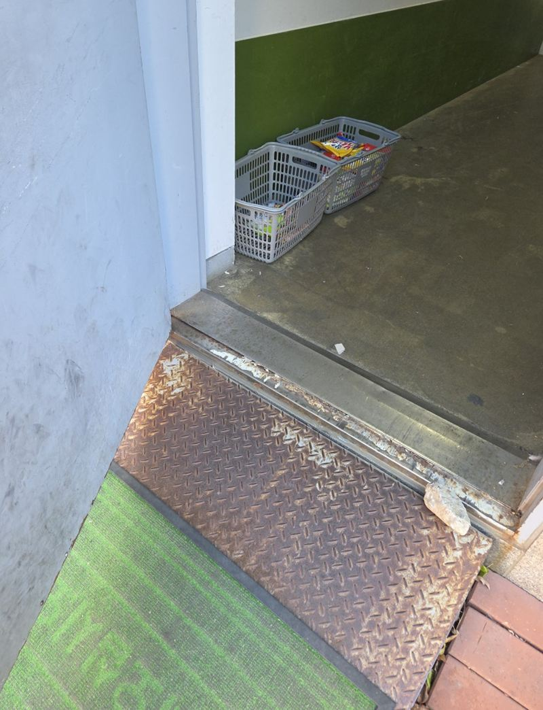
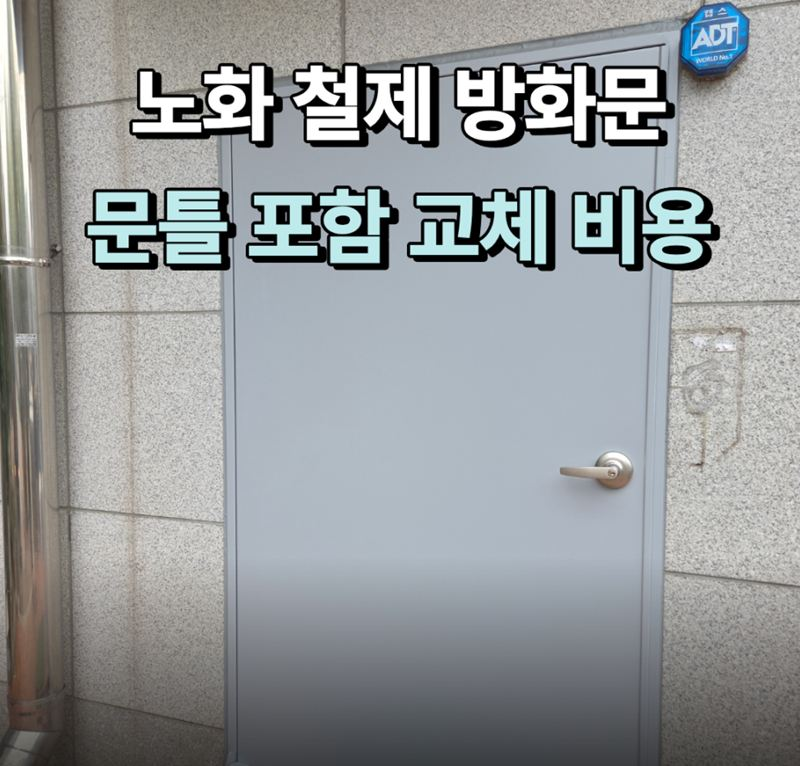
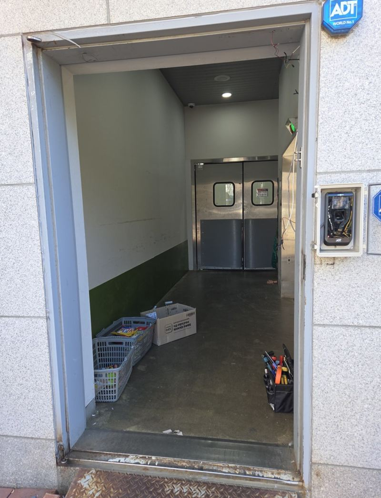
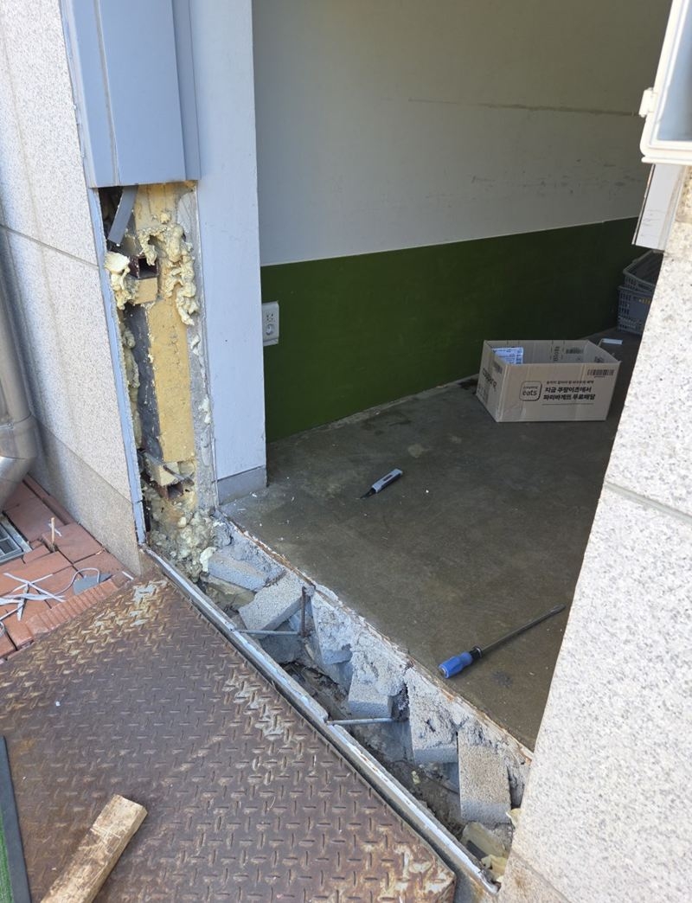
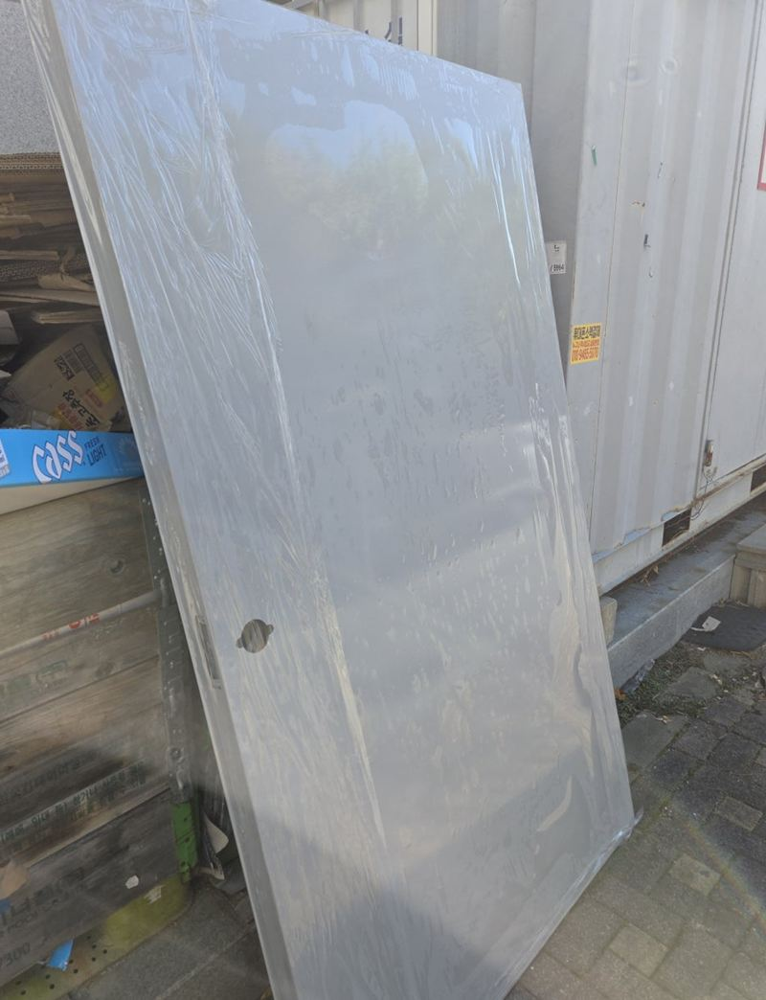
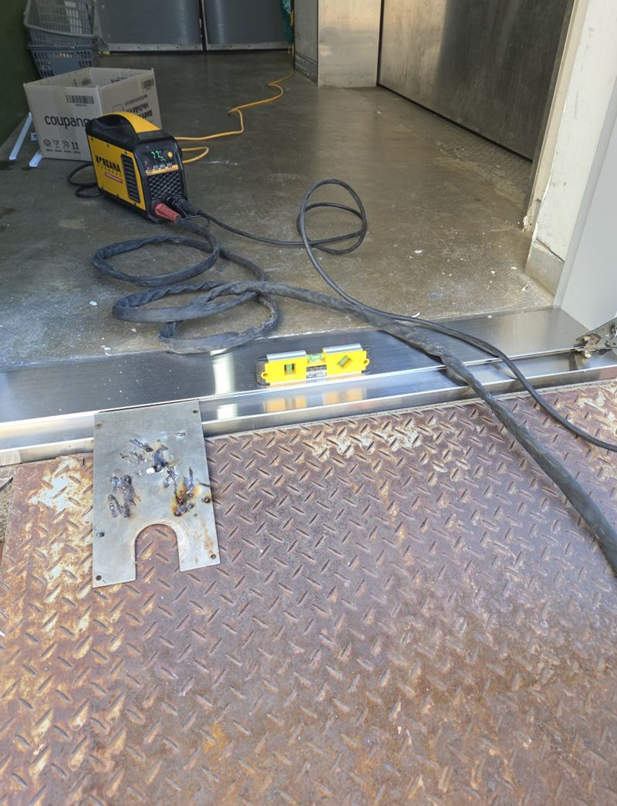
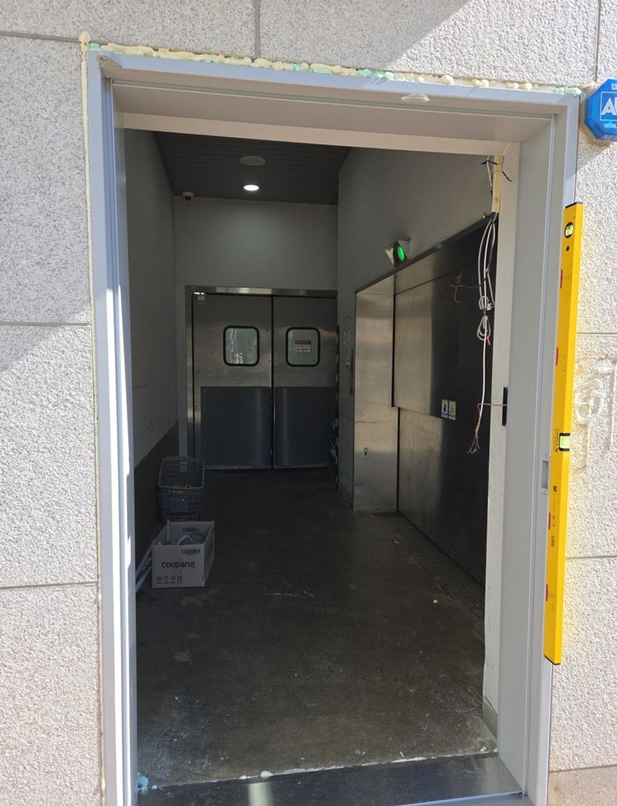
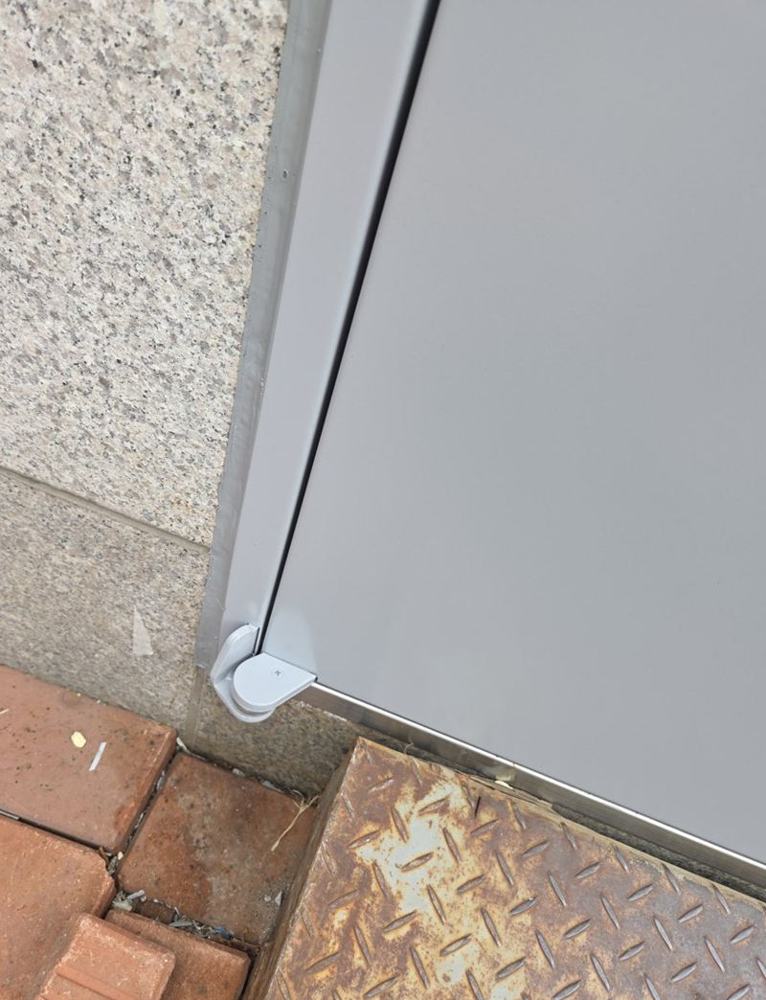

평택 노후 철제 방화문 문틀 포함 교체 비용
처음 문의는 "방화문 하나 바꿔 주세요"였어요. 그런데 현장에서 재 보니 문짝 아래가 휘어 있었고, 바닥 문턱과 문틀도 함께 틀어져 있었어요. 새 문짝만 끼우면 다시 걸리는 상태라서 문틀까지 잘라 내고 새로 맞춰 용접하는 방향으로 바꿨어요.

 교체 전교체 후
교체 전교체 후← 밀어서 전후 비교 →
문을 열 때마다 바닥에 끌리던 출입문
오래 쓴 철제문은 아래쪽부터 망가지는 경우가 많아요. 이 출입구도 문짝 하단 모서리가 바깥으로 벌어져 있었고, 닫을 때마다 바닥 철판에 긁히는 소리가 났어요. 문턱 쪽 금속판은 들떠 있었고, 문틀과 벽 사이 실리콘도 갈라져 있었어요.

왼쪽: 교체 전 전체 모습 / 오른쪽: 바닥 쪽으로 벌어진 문짝 하단
문짝만 바꿀까, 문틀까지 바꿀까
방화문 교체 견적이 크게 갈리는 지점이 여기예요. 같은 문 한 장이라도 어디까지 손대느냐에 따라 공정이 달라져요.
| 문짝만 교체 | 문틀 포함 교체 | |
|---|---|---|
| 맞는 경우 | 문틀이 반듯하고 경첩 자리가 멀쩡할 때 | 문틀이 휘었거나 벽·바닥과 함께 틀어졌을 때 |
| 주요 작업 | 기존 문 탈거, 새 문짝 장착, 닫힘 조정 | 고정부 절단, 실측 제작, 용접 고정, 실리콘 마감 |
| 확인할 것 | 문짝 크기와 경첩 위치 | 개구부 크기, 벽체 수평, 문턱 상태 |
이 현장은 오른쪽 경우였어요. 벽과 바닥에 물려 있는 금속 프레임이 실리콘·우레탄폼에 더해 용접으로 붙어 있었기 때문에, 그대로 두고 새 문만 다는 방법은 맞지 않았어요.
철거에서 마감까지, 현장에서 한 일
그라인더로 기존 고정부 절단
문짝을 떼어 낸 뒤 벽체와 바닥에 남은 프레임을 그라인더로 잘라 냈어요. 주변 벽면과 문턱이 상하지 않게 붙어 있던 곳을 하나씩 분리했어요.


실측한 새 프레임을 세우고 용접
철거한 자리의 폭과 높이를 다시 재서 맞춘 프레임을 세웠어요. 좌우 간격과 수평을 먼저 맞춘 다음 용접으로 고정했어요. 벽이 반듯하지 않은 건물일수록 이 자리 잡기에 시간이 더 들어요.


새 문짝 장착과 틈 확인
고정된 틀에 새 문짝을 걸고, 아래와 옆이 닿는 상태를 여러 번 열고 닫으며 확인했어요. 마지막으로 가장자리를 실리콘으로 마감하고, 떼어 낸 기존 자재는 현장에서 수거했어요.


이 현장 견적에 들어간 일들
완성된 사진만 보면 회색 문 한 장이 바뀐 것 같지만, 실제로는 여러 공정이 이어졌어요. 문틀 포함 교체 견적을 받으실 때 아래 항목이 들어 있는지 비교해 보시면 도움이 돼요.
- 기존 문짝 탈거와 고정부 그라인더 절단
- 개구부 실측과 새 프레임·문짝 맞춤 제작
- 수평·간격 조정 후 용접 고정
- 문짝 장착, 닫힘 상태 확인과 실리콘 마감
- 떼어 낸 철제 자재 수거와 현장 정리
어느 단계가 빠지느냐에 따라 금액이 달라 보일 수 있어요. 특히 기존 틀 절단과 맞춤 제작은 문짝만 바꿀 때는 없는 공정이라서 견적 차이가 가장 크게 나는 부분이에요.
방화문 교체 문의 전에 찍어 두면 좋은 사진
- 문 전체 정면닫힌 상태로 문과 문틀이 한 장에 다 나오게 찍어 주세요.
- 문 아래와 문턱휘었거나 끌리는 곳, 녹슨 곳이 있으면 가까이 찍어 주세요.
- 경첩과 도어클로저위쪽 경첩 쪽이 처졌는지 확인하는 데 도움이 돼요.
- 대략적인 크기문 폭과 높이를 줄자로 재서 알려주시면 상담이 빨라요.
철제 방화문 교체, 이런 것도 물어보세요
방화문이 휘어서 잘 안 닫히는데 수리로 될까요?
경첩이나 도어클로저 문제라면 조정으로 나아지기도 해요. 문짝이나 문틀 자체가 휘었다면 교체를 검토해야 해서, 사진을 보고 함께 판단해요.
문틀까지 바꾸면 벽을 크게 깨야 하나요?
이 현장은 벽을 부수지 않고 고정부만 잘라 냈어요. 다만 기존 문틀이 어떻게 묻혀 있느냐에 따라 작업 범위가 달라질 수 있어요.
녹슨 철문은 칠만 다시 해도 될까요?
표면 녹이라면 녹 제거 후 도장으로 정리하는 방법도 있어요. 아래가 삭아서 구멍이 났거나 휘었다면 교체 쪽이 나을 수 있어요.
건물 출입문이라 작업 중에 드나들 수 있나요?
철거부터 새 문을 다는 동안은 출입구가 열려 있어요. 출입이 많은 시간을 피해 일정을 잡을 수 있게 미리 말씀해 주세요.
떼어 낸 철문은 어떻게 하나요?
이 현장에서는 떼어 낸 자재를 수거해 폐기를 도와드렸어요. 현장마다 다를 수 있어서 상담할 때 함께 확인해요.
가까운 지역 현관문·방화문 현장
- 오산현관 철제문 저렴하게 복원
- 광명현관 방화문 틀어짐, 힌지 수리
문 전체 사진과 휘거나 녹슨 곳 사진을 준비해서 전화 주세요.
전화 상담 010-4517-9872